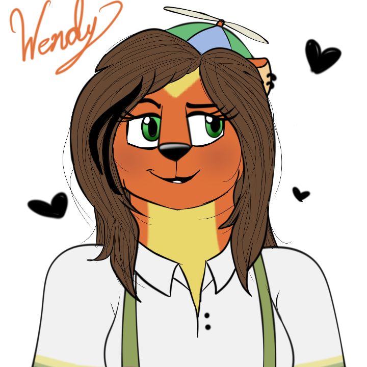
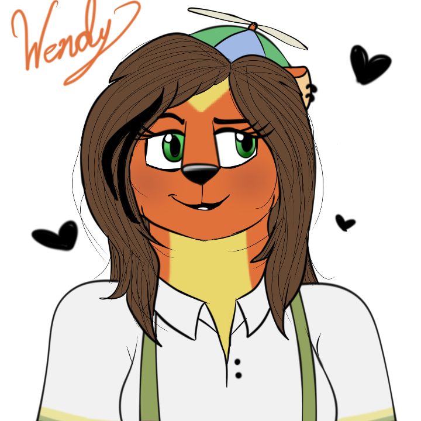

EquestriaFreddy95

Mis redes sociales las puedes encontrar aqui abajo 😱:

La historia de mi au es sobre una niña llamada melany (yo), la cual paso por muchos conflictos emocionales y fisicos , desde agreciones tanto verbales y fisicas hasta familiares , a melany le secuestraron a sus padres y se quedo sola y un hombre llamado nick toma la decision de adoptar a la pequeña mel , el tiempo pasa y melany se encuentra en un restaurante de eventos festivos llamado "willys wonderlan" que esta conformado por distintos personajes famosos, ellos son: willy weasel,tito,sara,arty,ozzie,cammy etc, el personaje de willy se hace mejor amigo de melany y todo era felicidad y alegria , hasta que aparece jerry!!, un asesino en serie que buscaba el objetivo de acercarse a melany a base de willy el cual era su hijo adoptivo, con el cual llevaria a cabo su plan de asesinar a la pequeña mel, siendo manipulado por jerry .

Esta historia se creo con el fin de expresar los sentimientos guardados que nunca pude expresar con otras personas y lo transmito por esta historia , Willys Wonderland pity Party ,lo llame asi por la cancion famosa de la artista reconocida "Melany Martinez" la cual fue mi inspiracion desde que la escuchaba en youtube.